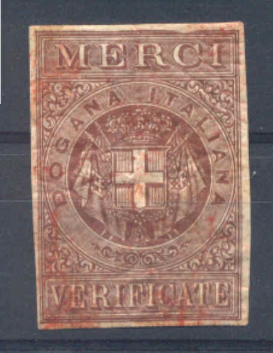
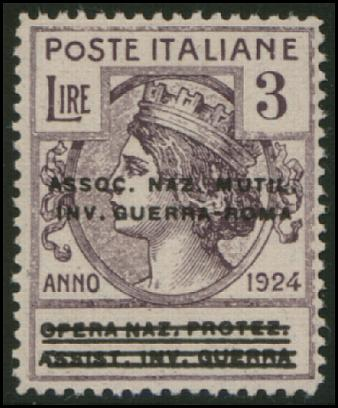
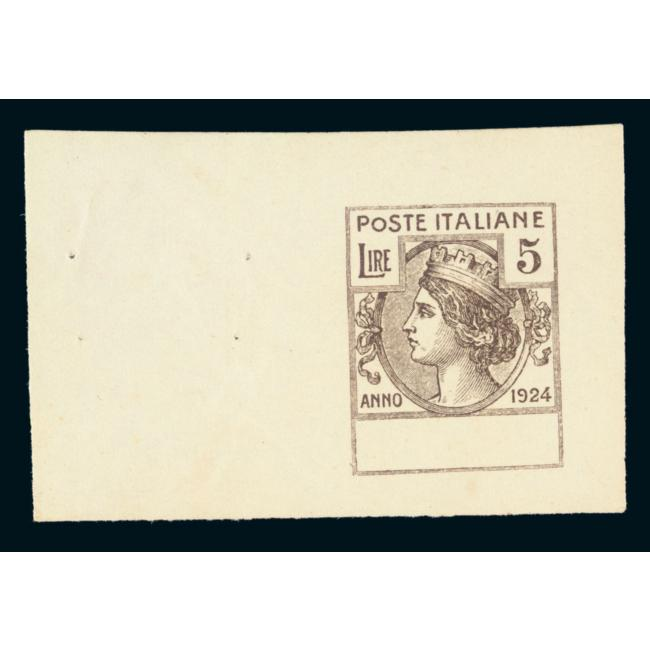

"MERCI VISITATE"; this stamp exists with overprint "A.M.G. F.T.T." (Trieste) in two lines
Return To Catalogue - Italy fiscal stamps, part 1 - Italy fiscal stamps, part 2 - Italy overview
Note: on my website many of the
pictures can not be seen! They are of course present in the
catalogue;
contact me if you want to purchase the catalogue.
Italy fiscal stamps, part 1, Italy fiscal stamps, part 2

"MERCI VISITATE"; this stamp exists with overprint "A.M.G. F.T.T." (Trieste) in two
lines
These stamps were printed together, the left image with a Roman
figure and inscription "COMMITENTE", the middle with
King Victor Emanuel III and "VETTORE", the right image
with a truck and "DESTINATARIO"
I have seen the values 5 c black 10 c blue 20 c green 30 c grey 50 c violet 1 L red 1.75 L brown 2 L blue 3 L orange 5 L green 10 L red
Two fiscal stamps with the head of Mussolini at the right hand
side and arms at the left hand side. The first one has
inscription "ASS. PUBBL. IMPIEGO" and the second
"OPERAIE E LAVORANTI A DOMICILIO"
Inscription "VERIFICATO DOGANA ITALIANA" with arms of
Italy in the center.
Two stamps with a head on it, only inscription '2-3', '3-16' and '5-20'. These are "Marche per Quaderni" stamps, a quarterly tax on wages on legal folios (1935):
(Heads with no country name, only inscription '2-3', '3-16' and
'5-20')
Genuine stamps
With inscription 'ASSOC. NAZ. MUTIL. INV. GUERRA - ROMA', 8 values were issued (from 5 c to 5 L).
Another set has the inscription 'BIBLIOT. CIRCOLANTI MILANO': 4 values (5 c to 50 c).
Yet another set has inscription 'LEGA NAZIONALE TRIESTE': again 4 values (5 c to 50 c).
Again another set exists with inscription 'OPERA NAZ. PROTEZ. ASSIST. INV. GUERRA'; 7 values (5 c to 3 L). This set exists with black overprint 'ASSOC. NAZ. MUTIL. INV GUERRA - ROMA' .
And again another stamp with 'UFFICIO NAZIONALE COLLOC. DISOCCUP.' (5 c green, 10 c red, 25 c brown, 30 c red-brown, 50 c lilac, 1 L blue, 5 L brown).
All the above overprints are quite rare and have been forged. For example the overprint 'ASSOC. NAZ. MUTIL. INV GUERRA - ROMA':

Forgery! Note the indentations in the right frameline in this
forgery.
I'm not 100 % sure, but this might be one of the modern forgeries of Italy that are often offered together with forgeries of the Italian States. These forgeries are offered in large quantities on Ebay (2007).

Example, fiscal stamp of Italy ("MARCA DA BOLLO", 20 c red) surcharged "CORONE 0,20":


Turkish fiscal stamps with "OCCUPAZIONE ITALIANA OCCUPATION
ITALIENNE ITLLAIKN KATOXH"
(Italian occupation) printed on it in three languages. Issued for
the occupied Egean islands in the Mediterranean sea.
These overprints exist for "DROIT FIXE" fiscal stamps of Turkey and 5 other sets of fiscal stamps of Turkey.
Stamps - Francobolli - Briefmarken - Timbres-Poste
{kind=link}